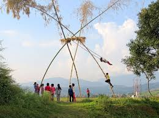
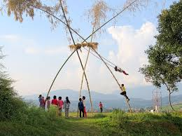
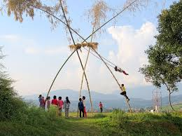
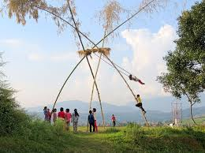

.jpeg) 

.jpeg)
.jpeg) 

Dashain is the biggest and most important festival in Nepal, celebrated by Hindus across the country. It usually falls in the months of September or October and lasts for 15 days. The festival honors the victory of the goddess Durga over the demon Mahishasura, symbolizing the triumph of good over evil. During Dashain, families come together to worship, receive blessings, and enjoy special food. Elders offer tika (a mixture of yogurt, rice, and vermilion) and jamara (sacred barley grass) to younger members as a blessing for health and prosperity. The festival is also marked by animal sacrifices, kite flying, fairs, and swings. Dashain promotes unity, renewal of relationships, and cultural identity among Nepalis. It is a time of joy, tradition, and religious devotion.
.jpeg)
Tihar, also known as Deepawali or the Festival of Lights, is one of the most beautiful and widely celebrated Hindu festivals in Nepal. It usually falls in October or November and lasts for five days. Each day of Tihar honors different animals, gods, and family bonds. The festival begins with Kaag Tihar (crow worship), followed by Kukur Tihar (dog worship), and Gai Tihar (cow worship) along with Laxmi Puja, when homes are decorated with oil lamps and candles to welcome the goddess of wealth, Laxmi. The fourth day is Govardhan Puja or Mha Puja (self-purification by Newars), and the fifth day is Bhai Tika, where sisters apply tika and offer garlands to their brothers, praying for their long life and prosperity. Tihar symbolizes light, love, and harmony, strengthening family bonds and reflecting Nepal’s rich cultural traditions.
Chhath is a major Hindu festival dedicated to the Sun God (Surya) and his consort Chhathi Maiya. It is mainly celebrated in the Terai region of Nepal and parts of northern India, especially Bihar and Uttar Pradesh. The festival usually falls in October or November and lasts for four days. Devotees, especially women, observe strict fasting, take holy baths in rivers or ponds, and offer argha (prayers and offerings) to the rising and setting sun. The rituals are performed with great purity and devotion, praying for the health, prosperity, and well-being of family members. Chhath is known for its environmental significance and emphasis on cleanliness, discipline, and devotion. It is a celebration of gratitude to nature and solar energy, deeply rooted in ancient Vedic traditions.
.jpeg)
Teej is a significant Hindu festival celebrated mainly by women in Nepal and parts of India. It falls during the Nepali month of Bhadra (August/September) and is dedicated to the goddess Parvati and her union with Lord Shiva. The festival symbolizes devotion, purification, and the well-being of husbands and families. Women observe strict fasting—sometimes without water—pray for marital bliss, and participate in special rituals and pujas. The celebration includes vibrant traditional dances, red attire, singing of folk songs, and gathering with family and friends. Teej is also a time to express women's social and emotional experiences through cultural expressions. The festival holds deep cultural and religious importance and reflects the strength of Nepali traditions and womanhood.